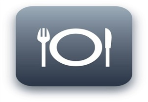

올바른 식습관 바로알자
평소에는 아무 탈 없이 건강한 사람이라도
한 번쯤은 소화가 안되어 고생한 경험이 있을 것입니다.
소화불량은 속이 더부룩하고 배에 가스가 차는 증상을 보이는데요.
이러한 증상을 대비하기위해 원인과 올바른 식습관에 대해 알아야겠죠?
소화불량의 원인
소화불량은 식습관이 불규칙하거나 급하게 식사하여, 음식물이 소화효소의
작용을 충분하게 거치지 못하고, 위장관으로 넘어가면서 나타난다고 해요.
그리고 식사 중 공기를 삼키거나 배변이 불규칙해도 증상이 나타난대요.

올바른 식습관
첫 번째, 평소 식사 태도를 체크하여, 자신이 무심코 지나친
소화를 방해하는 행동에 대해서 살펴봐야 합니다.
식사 태도는 소화에 많은 영향을 차지하기 때문입니다.
먼저 매 끼니마다 식사 시간이 어느 정도인지 파악하도록 해요.
음식물이 입 안에서 부서지면서 침과 섞여야만 소화가 잘되므로
적어도 30분 이상의 식사시간을 갖도록 해야 합니다.
두 번째, 식사를 거르지 말아야 합니다.
식사를 거르게 되면, 위의 기능이 떨어져 소화불량을 일으킵니다.
세 번째, 스트레스를 받지 말아야 합니다.
`밥 먹을 때는 개도 안 건드린다`는 말이 있듯이 식사 전에 혹은 식사 중에
스트레스를 받게 되면, 위에 분포하는 신경들이 영향을 받아 소화를 방해합니다.
지방이 많은 음식은 소화되는 시간이 길어지기 때문에
소화가 잘 되지 않는 사람은 피하는 것이 올바른 식습관입니다.
우리가 소화가 잘 될 것이라고 생각하고 있는 요구르트나 우유
그리고 아이스크림도 소화불량을 일으키는 음식 중 하나입니다.
양념이 들어간 음식으로 위를 적당히 자극한다면
식욕도 돋우고 소화도 잘 된다고 하네요.
평소에 올바른 식습관을 갖기 위해서는
식사 때마다 가볍게는 10분 이상의 거리를 산책하면 좋아요.
힘든 운동이라면 위에 부담이 가지 않도록 식후 1시간 뒤에 하면 됩니다.
소화불량은 큰 일로 여기지 않아 소화제로만 해결하려고 하는데.
한 달 이상 증상이 나타나면 내시경 검사를 받아야합니다.